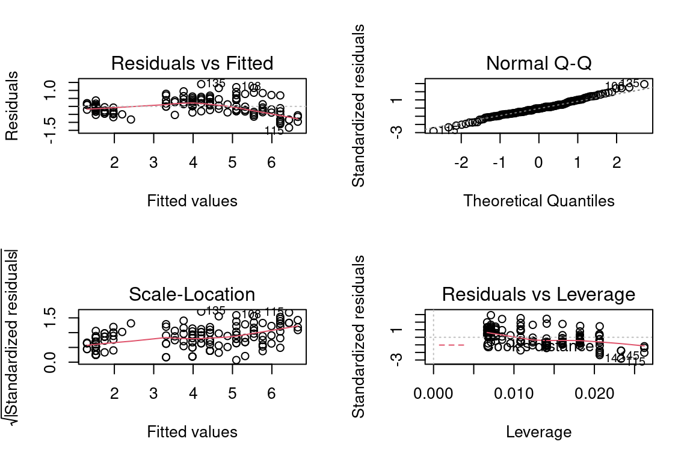
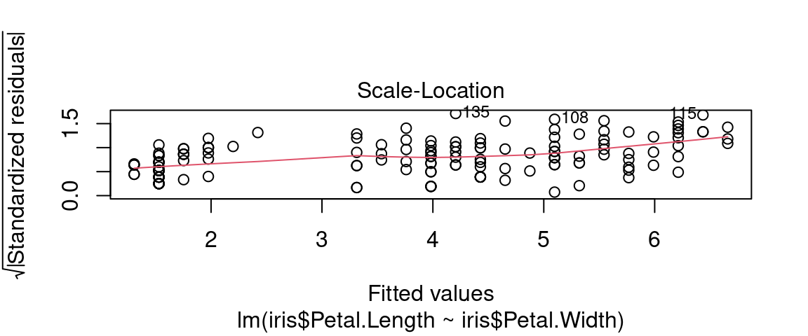

Chapitre 10 Régression linéaire
10.1 Avant toute chose
Vous devriez commencer à avoir l’habitude de ce mantra, encore plus valable dans le cas d’une analyse bivariée :
Toujours en premier: Regarder l’aspect des données avec des graphiques
la commande plot de R nous rend ce service pour tout dataframe :
10.2 Diverses formes des dépendances

En pratique les formes sont beaucoup moins régulières.
10.3 Les étapes
- Tracer le nuage de points
- Existe-t-il une relation ?
- Est-elle de forme linéaire ? De quel sens ?
- Si la liaison est de forme linéaire \(\rightarrow\) faire une régression
- Si la liaison est non linéaire, est-elle monotone ? De forme connue ?\(\rightarrow\) Proposer un modèle
5bis. Réaliser un modèle LOESS avec prudence (uniquement descriptif , aucun pouvoir de généralisation)
cf le blog de Lise Vaudor [http://perso.ens-lyon.fr/lise.vaudor/regression-loess/]
10.4 Régression linéaire
Si la forme du nuage de points s’y prête, on peut faire une régression linéaire (aussi appelé ajustement linéaire).
On cherche la droite qui «passe au mieux» (=ajustée) dans le nuage de points de deux variables quantitatives \(V_1\) et \(V_2\), qui permet de vsiualiser:
- l’intensité du lien / de la dépendance : points proche de la droite ou non ?
- la forme de la dépendance : linéaire ou non ?
- le sens de la dépendance : nulle, positive ou négative ?
10.5 Régression linéaire

«Droite qui passe au mieux» = qui minimise la somme des écarts quadratiques entre la droite et les points du nuage.
10.6 Régression linéaire : le modèle
L’équation de la droite est un modèle linéaire de la relation statistique qui lie \(V_1\) et \(V_2\);
Ici le modèle est : \(\hat{V_2}=aV_1+b\)
Si la régression linéaire est avérée, alors pour un individu \(i\) dont on connait \(V1_i\), on infère la valeur \(V2_i\) par le modèle : \(\hat{V_{2i}} = aV_{1i} +b\)
On dit aussi que \(V_1\) explique \(V_2\) , ou que le modèle prédit \(V_2\) à partir de \(V_1\) (on note les valeurs prédites \(\hat{V_2}\))
10.7 La grande question
Comment déterminer qu’une régression linéaire est «correcte» ?
10.9 le \(R^2\)
\(R^2 \in [0;1]\) , c’est le coefficient de détermination linéaire.
Donne la qualité de prédiction de la régression.
“Proche de 1”" \(\equiv\) “très bonne qualité”
C’est le pourcentage de “variation” de \(V_2\) due à la “variation” de \(V_1\)
10.10 le \(R^2\)
défini par : \(R^2 = 1 - \frac{\sum_{i=1}^{n} (y_i - \hat{y})^2}{\sum_{i=1}^{n} (y_i - \bar{y})^2}\)
si on note \(\hat{V_2}\) les valeurs de \(V_2\) prédite par le modèle linéaire, alors:
\(R^2=cor(\hat{V_2},V_2)^2\)
(au sens de la corrélation de Pearson)
10.11 la p-value
Elle peut s’interpréter comme «la probabilité d’avoir un résultat de regression identique avec deux variables véritablement indépendantes»
La p-value est associée à la notion d’hypothèses nulle. Ici , l’hypothèse nulle est “les deux séries sont indépendantes”.
10.12 la p-value
Plus grossièrement : la p-value est le pourcentage de chances de se tromper en rejetant l’hypothèse nulle,
c’est à dire
se tromper en considérant que les deux séries ne sont pas indépendantes et qu’il existe une relation entre les deux (ici, linéaire car nous testons un modèle linéaire).
10.13 l’Hypothèse nulle
\(H_0\) : «les deux variables sont indépendantes»
- conserver \(H_0\) : considérer les deux variables comme indépendantes
- rejeter \(H_0\) : considérer les deux variables comme dépendantes = ayant une relation statistique, un lien.
10.14 Format des resultats donnés par avec R
##
## Call:
## lm(formula = iris$Petal.Length ~ iris$Petal.Width)
##
## Residuals:
## Min 1Q Median 3Q Max
## -1.33542 -0.30347 -0.02955 0.25776 1.39453
##
## Coefficients:
## Estimate Std. Error t value Pr(>|t|)
## (Intercept) 1.08356 0.07297 14.85 <2e-16 ***
## iris$Petal.Width 2.22994 0.05140 43.39 <2e-16 ***
## ---
## Signif. codes: 0 '***' 0.001 '**' 0.01 '*' 0.05 '.' 0.1 ' ' 1
##
## Residual standard error: 0.4782 on 148 degrees of freedom
## Multiple R-squared: 0.9271, Adjusted R-squared: 0.9266
## F-statistic: 1882 on 1 and 148 DF, p-value: < 2.2e-16Distribution des résidus, coefficients du modèle ajusté et leur p-value associée (ici sur un test de Student, notée Pr(>|t|) et \(R^2\))
10.15 Bonus: Critères de significativité du lien linéaire
Les résidus \(\epsilon_i\) (écart entre valeur observée et valeur prédite (\(V_2 - \hat{V_2}\)) par le modèle pour l’individu \(i\)) doivent:
- être indépendants : covariance nulle ou très faible \(cov(x_i, \epsilon_i) = 0\)
- être distribués selon un loi normale de moyenne nulle \(\epsilon \sim \mathscr{N}(0,\sigma_{\epsilon})\)
- être distribués de façon homogène (homoscédasticité), i.e. de variance constante \(var(\epsilon_i)=\sigma_{\epsilon}^2\) , indépendante de l’observation
10.16 Bonus: Evaluation de l’indépendance des résidus avec R
Graphique de la fonction acf:
Si une barre exceptée la première dépasse la ligne en pointillés, on peut remettre en cause l’indépendance des résidus. Ici, c’est le cas.

10.17 Bonus:Les 4 graphiques résultats de la fonction lm
La fonction lm de R et ses résultats permettent de tracer 4 graphiques pour évaluer certains des critères de significativité.
modele1 <- lm(iris$Petal.Length~ iris$Petal.Width)
par(mfrow=c(2,2)) # pour avoir une matrice de graphes
plot(modele1)
10.18 Bonus: Évaluer l’homogénéité des résidus avec R
Premier graphique : pour vérifier que le nuage de points est homogène (e.g. pas de relation non-linéaire entre résidus et valeurs prédites)
Une éventuelle relation non-linéaire pourrait se retrouver dans les résidus(Ici : légère structure parabolique )

10.19 Bonus: Evaluer la normalité de la distribution des résidus avec R
Le deuxième graphique “Q-Q plot” : pour vérifier l’hypothèse de normalité des résidus, les points doivent être proches de la bissectrice

10.20 Bonus: Evaluer l’homoscédasticité des résidus
Le troisème graphique “Scale location” : si les résidus sont distribués de façon homogène suivant les valeurs “fittées”, alors la droite est plutôt horizontale et les points sont disposés de façon homogène autour.

Ici: légère pente mais les points sont distribués de façon relativement homogène autour de la droite.
10.8 Comment evaluer la “validité” du modèle linaire ?
En pratique, il faut réunir deux critères :